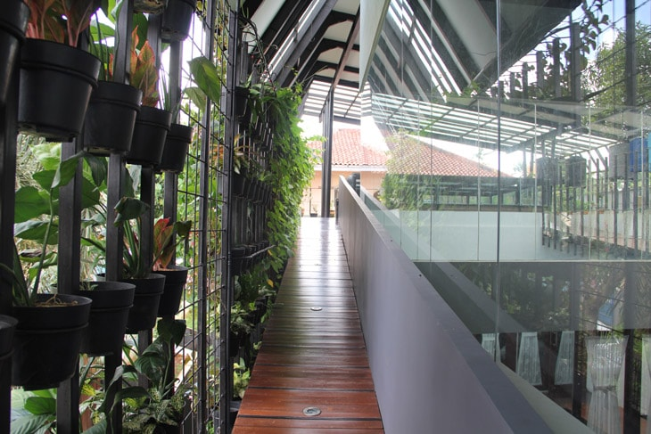
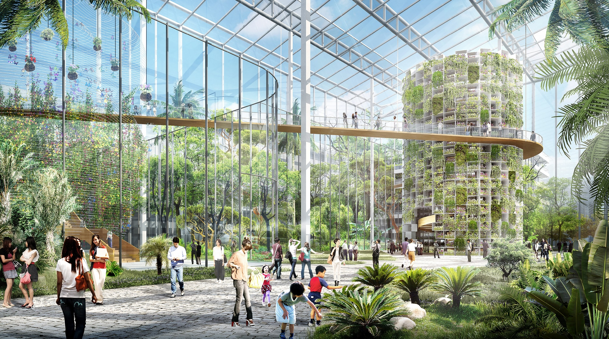

About
Babylon is committed to feeding people in a way that is positive for communities and the environment, today and in the future. We build kitchen gardens where people live, which means our produce is fresher, has longer shelf life and shorter food miles. The Urban Farming mission is to create an abundance of food for people in need by supporting and encouraging the establishment of gardens on unused land and space while increasing diversity, raising awareness for health and wellness, and inspiring and educating youth, adults and seniors to create an economically sustainable system to uplift communities around the globe.

- 

- 


Urban Farming
"Urban farm" may sound like an oxymoron,
but the concept has gone from being unimaginable to a
solid trend in the local foods movement. An urban farm is,
quite simply, a farm in an urban setting. More specifically,
an urban farm grows food in an urban area on land—usually
either a backyard or a vacant lot, but sometimes neglected
spaces such as street medians—that would not typically be
dedicated to producing food. They are most often found in
urban areas that have experienced some level of decline,
where space is available and inexpensive.
Our mission
- Business Growth
- Job Creation
- Urban Redevelopment
- Urban Agriculture
- Health and Wellness
- Global Investment